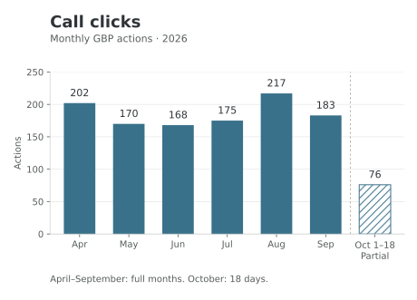
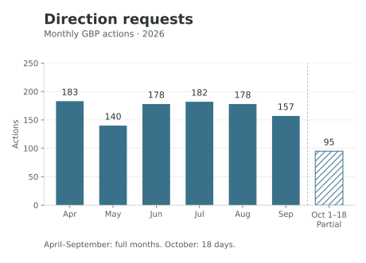
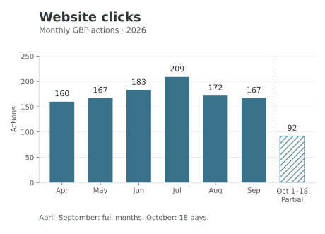
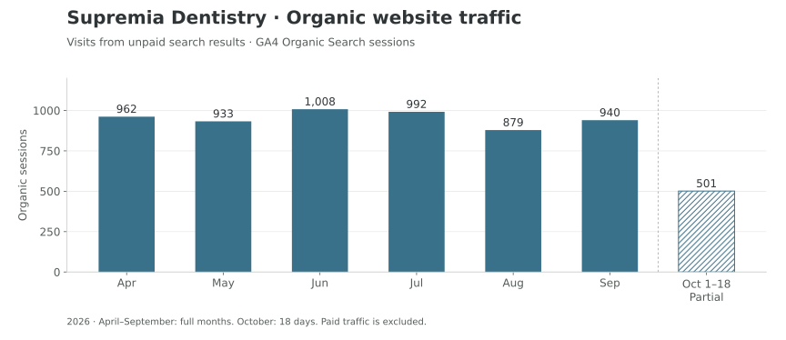

Performance & work review
How patients interacted with your Google profile, improvements to your website, and articles planned next.
Google Business Profile performance
April–September 2026: six full months. October: 1–18 only. These exports cover a different window from the work history below.
- Call clicks varied through the period, reaching their highest point in August at 217.
- Direction requests stayed between 140 and 183 per full month, with May the quietest month.
- Website clicks grew from 160 in April to a July high of 209, then settled at 167 in September.



Organic website traffic
Visits from unpaid search results. Paid traffic is excluded. April–September are full months; October covers 1–18 only.

Source: Google Analytics 4, Supremia’s website. Sessions are visits, not unique patients or enquiries.
Monthly GBP data
| Month | Coverage | Call clicks | Directions | Website clicks | Search views | Maps views |
|---|---|---|---|---|---|---|
| April | Full month | 202 | 183 | 160 | 661 | 346 |
| May | Full month | 170 | 140 | 167 | 533 | 340 |
| June | Full month | 168 | 178 | 183 | 519 | 422 |
| July | Full month | 175 | 182 | 209 | 591 | 299 |
| August | Full month | 217 | 178 | 172 | 724 | 334 |
| September | Full month | 183 | 157 | 167 | 787 | 339 |
| October 1–18 | Partial · 18 days | 76 | 95 | 92 | 575 | 142 |
Messages and Bookings are recorded as zero in all seven exports. That does not establish zero appointments at the practice.
Recent work & improvements
| Work | Status | Month |
|---|---|---|
| Helpful dental articlesPublished 28 articles to help patients find answers to common dental questions. This includes adding and formatting articles supplied by the practice. | Published | May–October |
| New treatment pagesAdded pages about SMART amalgam removal, same-day crowns, peptide remineralization and ozone therapy, and no-prep veneers. Added veneer videos and sent visitors from the old SMART page to the new one. | Live | June |
| Payment and financing informationPublished Financing and Care Credit pages, added application links, and updated the website menu to help patients find payment options. | Live | May; July |
| Meet the doctorsAdded Dr. Ruby Nah’s profile and photo, updated Dr. Morgan Herman’s page and contact button, and updated Dr. Edmond Suh’s photos. The full requested photo collage still needs a final check. | Updated; final check needed | June–July |
| Behind-the-scenes website improvementsUpdated files that help search engines find and understand the website. Software and security changes are also recorded, but those changes and the wider speed, usability and tracking checks still need confirmation. | Partly confirmed | July–August |
| New articles submitted to GoogleAsked Google to find the tongue-tie and cosmetic dentistry cost articles. Their appearance in search results still needs confirmation. | Submitted | September–October |
| Website design ideasPrepared homepage and treatment-page concepts, a style guide and a test version. These changes have not been confirmed on the public website. | Prepared | July; September |
| Clearer practice information for search enginesPrepared information about the practice and its pages to help search engines understand the website. It has not been confirmed as added to the live site. | Prepared | September |
| Links from articles to treatment pagesEight earlier articles still need links to related treatment pages. Later articles include links; completion of the earlier work remains unconfirmed. | Follow-up needed | Not recorded |
| Business listings and links from other websitesEarlier reports included plans for this work, but we did not find records confirming completed listings, links or press coverage. | Not confirmed | Not recorded |
“Reported complete” means the team marked the work complete; it does not mean every change has had a new final check. Article and page totals overlap with the work listed here.
Website Updates
Photo changes, offer removals, account access and other smaller website requests.
| Work | Status | Month |
|---|---|---|
| Practice and patient photosUpdated treatment, team, Invisalign and smile-gallery photos. Removed photos of former team members. | Reported complete | May–July |
| Awards and patient reviewsUpdated homepage awards, recognition logos and patient review quotes, including Wake Living recognition and Invisalign badges. | Reported complete | May–June |
| Outdated offers removedRemoved the homepage offer and the Get a Second Opinion offer so patients see current information. | Reported complete | June |
| Website and Google account accessCompleted the handover of website and Google marketing-account access to support ongoing website work. | Reported complete | April–May |
| Old patient questionnaire removedRemoved the outdated link to the new-patient questionnaire. The requested final website scan was not included in the completion record. | Reported complete | August |
| Practice phone number updatedThe team reported removing Patient Prism tracking and restoring 919-556-6200. An older number remains in a search-information file and prepared website information, so a final consistency check is needed. | Follow-up needed | October |
Published articles · 28
Articles added to the website during the review period.
New pages · 7
New treatment, doctor and financing pages added to the website.
Upcoming Work
Six articles are in draft. The planned publication months below are from the content tracker and may change.
| Article | Planned month | Status |
|---|---|---|
| How Much Does a Retainer Cost? Types and Replacement Prices | November | Draft |
| Gum Contouring: Benefits, Recovery, and What to Expect | November | Draft |
| Types of Dental Crowns and What They Cost | October | Draft |
| How to Stop Snoring: Causes, Treatments, and Dental Options | November | Draft |
| How to Know If You Have a Cavity: Signs to Watch For | October | Draft |
| Why Is My Mouth So Dry? Causes and What Helps | November | Draft |
These drafts are not included in the 28 published articles. The wider campaign plan will be added separately.